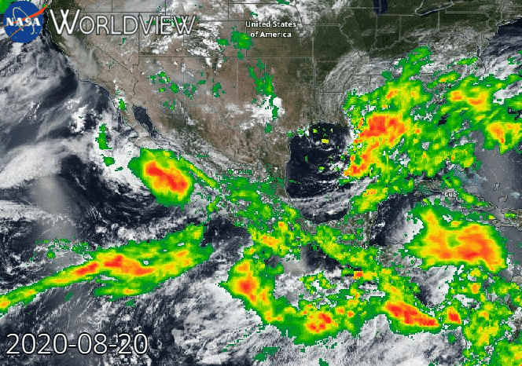

Hurricane Views
Some satellite views of the passing of a hurricane in Mexico



Risk Zones
It shows some of the states affected by Hurricane Hernan in 2020, the affected states were: Jalisco, Nayarit, Colima, Sonora, Sinaloa, Guerrero, Baja California North and South.